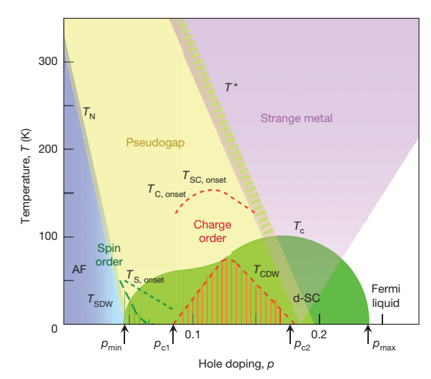
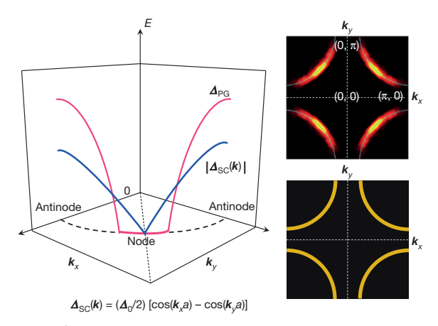

Review · Source 28
From quantum matter to high-temperature superconductivity in copper oxides
A cuprate is a doped correlated insulator whose spin, charge and superconducting degrees of freedom cannot generally be treated independently.
See → explain → test
From a constrained electron to a coherent pair
Picture 1 / 4
Start with the Cu–O plane
Look for: Compare a virtual hop with a real doped carrier.
Strong repulsion constrains double occupancy. Doping adds mobile charge without erasing correlations.
Check the argument in the original: PDF pp. 1–3 ↗
Picture 2 / 4
Order can disappear while correlations remain
Look for: Follow the alternating arrows, then the short correlated patch.
Long-range static antiferromagnetism and finite-range dynamical spin correlations are different statements.
Check the argument in the original: PDF pp. 2–3 ↗
Picture 3 / 4
Read the sign, not just the magnitude
Look for: Follow one point around the teaching Fermi circle.
A d-wave gap has diagonal nodes and changes sign under a 90° rotation. Symmetry constrains a mechanism; it does not uniquely identify one.
Check the argument in the original: PDF pp. 3–4 ↗
Picture 4 / 4
Separate two questions
Look for: Compare the energy needed to break a pair with the cost of twisting its phase.
Spectral gaps, superfluid stiffness and thermodynamic order probe different aspects of the state.
Check the argument in the original: PDF pp. 4–5 ↗
Predict before revealing
A sample has a large spectral gap but small phase stiffness. What follows?
Choose an answer, then compare the reasoning.
A gap measures an excitation scale. Stiffness measures the cost of a phase twist. Their difference helps explain why a large gap does not guarantee a high ordering temperature; it does not identify every pseudogap as preformed pairing.
Read the answer
Pairing and phase coherence can have different scales. A gap measures an excitation scale. Stiffness measures the cost of a phase twist. Their difference helps explain why a large gap does not guarantee a high ordering temperature; it does not identify every pseudogap as preformed pairing.
Read the author figures · evidence and axes

Start at one doping and move vertically. Compare solid ordering regions with dashed fluctuation onsets. Then identify which boundaries are schematic.
This is the authors’ 2015 synthesis, not measured data for one compound.
Open full source page ↗ · Click the figure to enlarge
Locate the antinodes and diagonal node. Compare the blue superconducting gap with the red pseudogap profile; read the arc maps as spectral weight.
The magnitude plot cannot by itself display the sign of Δ(k).
Open full source page ↗ · Click the figure to enlargeDetailed argument · from assumptions to conclusions
1 · Build the physical system before reading its phase diagram
The active electronic layers contain copper and oxygen orbitals. The review emphasizes Cu 3dₓ²₋ᵧ² hybridization with planar O 2p orbitals; the insulating spacer layers also control charge transfer. An odd electron count per unit cell would suggest a partially filled band in a simple one-electron picture. Strong local repulsion instead makes moving charge expensive, while the remaining spins can still fluctuate and order. This is the useful Mott-insulator starting point. A one-band Hubbard description is a reduced model of this Cu–O chemistry, not a complete orbital inventory.
Distinguish the hopping scale t, on-site repulsion U and antiferromagnetic exchange J. Virtual hopping generates J ≈ 4t²/U in the elementary strong-coupling reduction. That expression explains a mechanism and a scale hierarchy; it is not an accurate universal formula for every multiorbital cuprate parameter. Doping introduces mobile charge without automatically removing the strong correlations. Long-range antiferromagnetism can disappear while substantial short-range dynamical spin correlations remain.
PDF pp. 2–3 ↗2 · Read Figure 2 without turning every line into a transition
The horizontal axis is holes per CuO₂ plane; the vertical axis is temperature. Follow a fixed-doping vertical trajectory to ask which changes appear on cooling. The superconducting dome identifies where coherent d-wave superconductivity develops. Underdoped and overdoped mean below and above the doping of maximum Tc for the material under discussion. They do not name two universal compositions shared by every family.
The dashed onset curves describe precursor correlations or fluctuations; T* marks a pseudogap crossover in this schematic. They should not all be interpreted as thermodynamic singularities. Spin order, charge order, superconductivity and the pseudogap overlap rather than occupying mutually exclusive boxes. The diagram synthesizes several materials and measurements. Its arrows and line positions are a historical organizing picture, not a calibrated phase boundary for a specific LBCO or LSCO sample.
PDF p. 2 ↗3 · Follow the argument for d-wave pairing
A repulsive interaction can favor pairing when its momentum dependence is strong and the gap changes sign between strongly coupled regions. Antiferromagnetic scattering near Q = (π/a, π/a) connects antinodal regions with opposite signs of the dₓ²₋ᵧ² gap. The negative sign in the gap equation allows such repulsive scattering to support a positive pairing eigenvalue. This is why a featureless on-site attraction is not required. The diagonal nodes are zeros of the gap, not missing lattice sites.
The review compares weak-coupling and t–J perspectives, while stressing the lack of a controlled general solution at the intermediate coupling relevant to cuprates. Numerical support for d-wave tendencies and close competing energies is evidence about models. Using measured spin spectra as pairing glue can be productive, but the same electrons form both the pairs and the fluctuations. Phonons, nonlocal Coulomb interactions and disorder can still influence Tc; electronic pairing does not imply that the lattice is irrelevant.
PDF pp. 3–4 ↗4 · Separate a spectral gap from phase coherence
A superconducting condensate has a complex amplitude and a coherent phase. Superfluid stiffness measures the energy cost of twisting that phase and is related to magnetic screening. In underdoped materials the stiffness is small, so a large pairing-related energy scale does not guarantee a comparably high ordering temperature. This makes precursor pairing plausible, but the review does not equate all of T* with superconducting fluctuations.
The pseudogap suppresses low-energy spectral weight most strongly near the antinodes. ARPES and tunnelling reveal a nodal–antinodal distinction and apparent Fermi arcs. An arc in a spectral intensity map is not automatically an open, conventional quasiparticle Fermi surface; broadening, coherence factors and reconstruction complicate the interpretation. The review explicitly describes tensions between probes. Charge order can compete with uniform superconductivity, while proposed pair-density-wave order provides a route to spatially modulated pairing and frustrated interlayer phase coupling.
PDF pp. 4–5 ↗5 · What the strange metal discussion establishes
Extended temperature-linear resistivity and incoherent spectral response challenge a simple weakly scattered quasiparticle description. Quantum critical scaling is one proposed explanation. The review asks which order parameter would be critical, whether its correlation length grows as required, and whether a single critical fan can cover the full observed range. A straight resistivity curve alone answers none of those questions.
Holographic descriptions are introduced as ways to investigate strongly interacting systems and generate useful questions. Their mathematical control applies to particular theories, not directly to a solved microscopic cuprate Hamiltonian. Keep three levels separate when taking notes: observations such as spectral suppression; phenomenology such as a scaling law; and a microscopic explanation. The review is strongest as a map of these relationships and unresolved problems, rather than as a final solution to high-temperature superconductivity.
PDF pp. 5–7 ↗Essential equations · symbols, meaning & units
The gap reverses sign under a 90° rotation and vanishes on the zone diagonals. a is the in-plane lattice spacing; Δ₀ sets the amplitude. The formula describes superconducting symmetry, not a universal pseudogap fit.
PDF p. 3 ↗Elementary strong-coupling superexchange scale. Its regime and orbital reduction matter; increasing U indefinitely does not establish an ever stronger superconducting ground state.
PDF p. 3 ↗Explain it in depth
Why can spin correlations survive after the parent antiferromagnetic order disappears?
Long-range order requires spatially coherent static alignment. Exchange and local correlations can persist as finite-range, time-dependent fluctuations after that alignment is lost.
Does a d-wave gap identify the unique microscopic pairing mechanism?
No. It restricts the symmetry and interaction structure; multiple model descriptions can favor that symmetry.
What additional evidence would strengthen a quantum-critical explanation of linear resistivity?
A identified tuning parameter and candidate order, consistent length and energy scales, scaling of independent probes, and a justified range in which competing explanations are controlled.
Source coverage and version
All substantive body text on PDF pp. 1–7 read; bibliography structure on pp. 7–8 inspected. Figures 2–4 and gap notation visually checked. Historical 2015 synthesis; it is not a survey of subsequent discoveries.